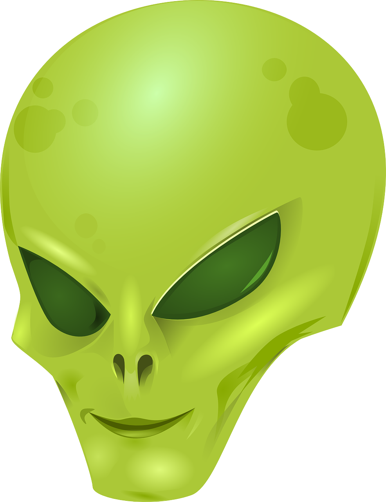

Pojęcie kosmity i problematyki obcych pojawiło się już w Prawdziwej historii Lukiana z Samosat
i w Opowieści o zbieraczu bambusu, a następnie spopularyzowane zostało w literaturze science fiction.
Nie ma w chwili obecnej wiarygodnych danych naukowych o istnieniu inteligentnych istot pozaziemskich,
choć wielu naukowców zajmujących się astronomią, astrobiologią i filozofią jest zdania, iż choćby
z przyczyn statystycznych gdzieś we Wszechświecie musi istnieć życie, w tym życie świadome.
Sprzeczność między brakiem oczywistych dowodów na istnienie kosmitów a koniecznością
ich istnienia wynikającą z powszechnie akceptowanych teorii naukowych określa się jako
paradoks Fermiego.